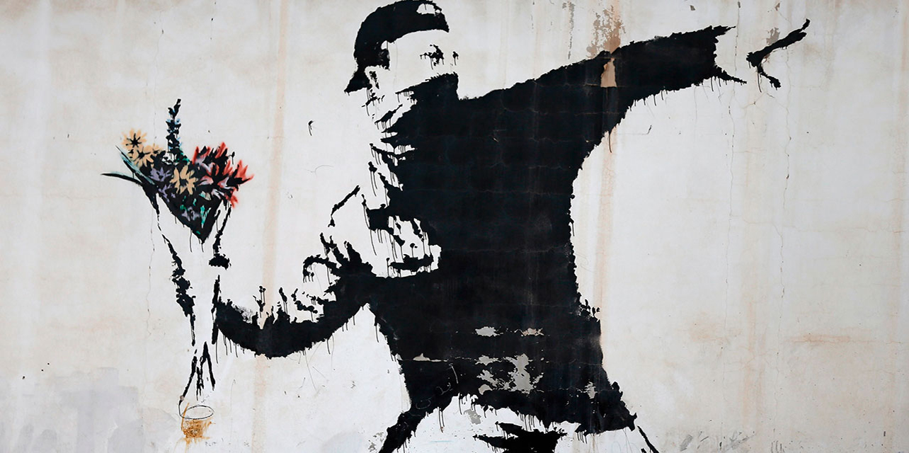
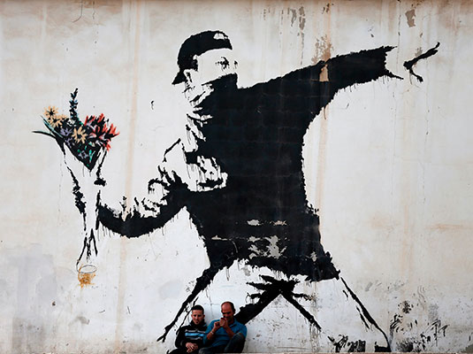
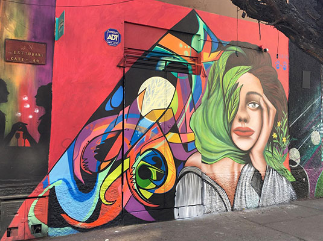
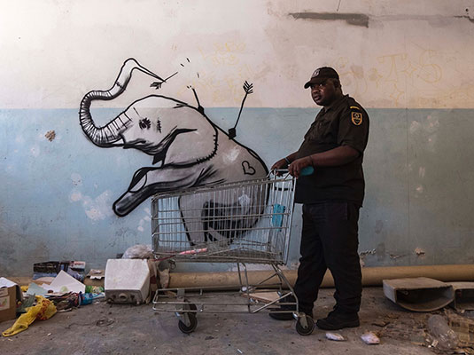

The 4 Best!

Banksy displays his art on publicly visible surfaces such as walls and self-built physical prop pieces. Banksy no longer sells photographs or reproductions of his street graffiti, but his public ‘installations’ are regularly resold, often even by removing the wall they were painted on. A small number of Banksy’s works are officially sold through Pest Control.

He paints women because they are a source of inspiration. Through their faces they tell him about his daily life, explains Gonzalo Matiz Salinas from Chile, perched on his ladder, brush in his right hand. In the other, he holds his mobile phone. He reproduces with precision the model that he realized in his workshop, located opposite.
Highly prolific painter and sculptor DALeast from China is one of the most prominent street art figures of his country and, arguably, one of the biggest names on the international urban and graffiti art scene. His dark yet mesmerizing, highly intricate paintings can be found in urban landscapes of cities around the globe.

Falko got his start in the world of street art in Cape Town in the late 1980s. He was just 16 at the time. Though most now associate him with his elephant artwork, it took him many more years to make a name for himself. For much of his early career he was bogged down by commercial work and was unable to find time to paint what truly inspired him.